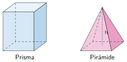

Un poliedro es regular si todas sus caras son polígonos regulares iguales y en cada vértice concurre el mismo número de caras. Solo existen cinco, conocidos como sólidos platónicos: tetraedro, cubo (hexaedro), octaedro, dodecaedro e icosaedro.
Poliedro
Tipo de cara
Caras (\(C\))
Vértices (\(V\))
Aristas (\(A\))
Tetraedro
triángulos
4
4
6
Cubo
cuadrados
6
8
12
Octaedro
triángulos
8
6
12
Dodecaedro
pentágonos
12
20
30
Icosaedro
triángulos
20
12
30
Prismas y pirámides

11.1.1
Cuenta las caras, vértices y aristas de un prisma hexagonal y de una pirámide pentagonal. Comprueba que cumplen la fórmula de Euler.
Lo que escribes se guarda solo en este navegador. Para entregarlo, pulsa «Copiar mis respuestas» y pégalo en Classroom.